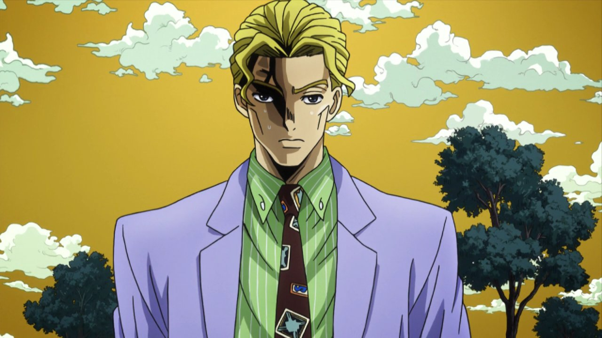

...О себе...

Меня зовут Едавкин Степан. Мне 19 лет. Мой дом находится в Новой Самаре, посёлок Мехзавод. Учусь в SSAU и возвращаюсь домой после пар порой только в 19. Не курю, выпиваю корвалол изредка. Ложусь спать в 23:30 и убеждаюсь, что встану к паре, несмотря ни на что. Перед сном я пью горячий чай с молоком, а также минут 40 смотрю ДЖОДЖО. Утром я просыпаюсь уставший и хочу спать как младенец. На медосмотре мне сказали, что у меня ЖКБ. Я пытаюсь донести, что я обычный человек, который хочет жить спокойной жизнью. Я не забиваю себе голову проблемами вроде побед или поражений, и не обзавожусь врагами, из-за которых не мог бы уснуть. Я знаю наверняка: в таком способе взаимодействия с обществом и кроется счастье. Хотя, если бы мне пришлось сражаться, согласно тёр веру я бы выиграл с вероятностью 50/50.
...Шучу...
Простите...
Больше так не буду....Наверное....